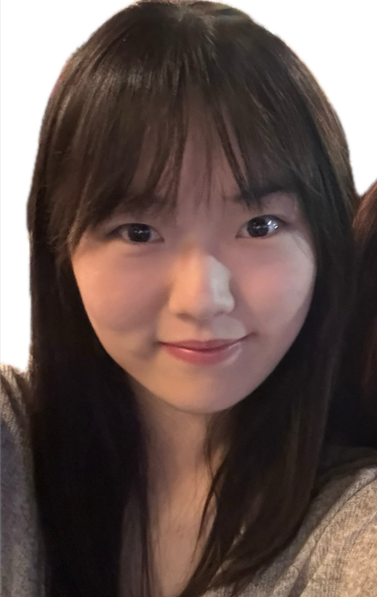

Hi! I'm a Psychology student at UC San Diego (2025–2027), with double BAs in Psychology and Cognitive Science from UC Davis (2023–2025). I'm interested in child development, early autism detection, inclusive education, and AI cognition—metacognition and perspective-taking in vision–language models.
I work with the VBVR Team, Grow AI, and previously the ASPIRE Program at the MIND Institute; I also do research at Thriving Asians on Asian mental health. I care about how children and AI both learn to understand the world—and how we can support them better.